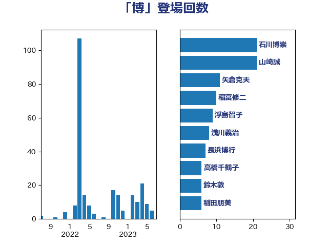

単語「博」

| 石川博崇 | 公明党 | 21 回 |
| 山崎誠 | 立憲民主党 | 21 回 |
| 矢倉克夫 | 公明党 | 11 回 |
| 稲富修二 | 立憲民主党 | 10 回 |
| 浮島智子 | 公明党 | 9 回 |
| 浅川義治 | 日本維新の会 | 8 回 |
| 長浜博行 | 無所属 | 7 回 |
| 高橋千鶴子 | 日本共産党 | 6 回 |
| 鈴木敦 | 国民民主党 | 6 回 |
| 稲田朋美 | 自由民主党 | 6 回 |
| 永岡桂子 | 自由民主党 | 6 回 |
| 浜野喜史 | 国民民主党 | 5 回 |
| 室井邦彦 | 日本維新の会 | 5 回 |
| 末松信介 | 自由民主党 | 4 回 |
| 斉藤鉄夫 | 公明党 | 4 回 |
| 尾辻秀久 | 無所属 | 4 回 |
| 大西健介 | 立憲民主党 | 4 回 |
| 伊藤渉 | 公明党 | 4 回 |
| 高良鉄美 | 無所属 | 3 回 |
| 福島伸享 | 無所属 | 3 回 |
| 江藤拓 | 自由民主党 | 3 回 |
| 岸田文雄 | 自由民主党 | 3 回 |
| 宮本岳志 | 日本共産党 | 3 回 |
| 荒井優 | 立憲民主党 | 2 回 |
| 根本匠 | 自由民主党 | 2 回 |
| 松川るい | 自由民主党 | 2 回 |
| 岩谷良平 | 日本維新の会 | 2 回 |
| 山本順三 | 自由民主党 | 2 回 |
| 大西英男 | 自由民主党 | 2 回 |
| 古川直季 | 自由民主党 | 2 回 |
| 佐藤信秋 | 自由民主党 | 2 回 |
| 伊藤忠彦 | 自由民主党 | 2 回 |
| 三ッ林裕巳 | 自由民主党 | 2 回 |
| 高橋光男 | 公明党 | 1 回 |
| 長友慎治 | 国民民主党 | 1 回 |
| 鎌田さゆり | 立憲民主党 | 1 回 |
| 金城泰邦 | 公明党 | 1 回 |
| 野田聖子 | 自由民主党 | 1 回 |
| 芳賀道也 | 国民民主党 | 1 回 |
| 舩後靖彦 | れいわ新選組 | 1 回 |
| 細田博之 | 自由民主党 | 1 回 |
| 紙智子 | 日本共産党 | 1 回 |
| 笹川博義 | 自由民主党 | 1 回 |
| 田島麻衣子 | 立憲民主党 | 1 回 |
| 浜田靖一 | 自由民主党 | 1 回 |
| 森屋宏 | 自由民主党 | 1 回 |
| 林芳正 | 自由民主党 | 1 回 |
| 松野博一 | 自由民主党 | 1 回 |
| 松木けんこう | 立憲民主党 | 1 回 |
| 杉久武 | 公明党 | 1 回 |
| 木原稔 | 自由民主党 | 1 回 |
| 新垣邦男 | 立憲民主党 | 1 回 |
| 山東昭子 | 自由民主党 | 1 回 |
| 山口俊一 | 自由民主党 | 1 回 |
| 山井和則 | 立憲民主党 | 1 回 |
| 大石あきこ | れいわ新選組 | 1 回 |
| 大岡敏孝 | 自由民主党 | 1 回 |
| 堀井巌 | 自由民主党 | 1 回 |
| 吉川沙織 | 立憲民主党 | 1 回 |
| 勝目康 | 自由民主党 | 1 回 |
| 伊佐進一 | 公明党 | 1 回 |
| 三原じゅん子 | 自由民主党 | 1 回 |